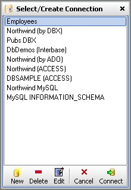

The Select/Create Connection Dialog
Clicking the button (not on the Arrow) on the Main Toolbar displays the Select/Create Connection Dialog.
- To Connect to a Database, select the Connection from the displayed list and click the Connect button at the bottom. You can also simply double-click to connect.
- To Delete a connection, select it and click on the Delete button at the bottom. Answer Yes on the Confirmation dialog shown.
 Once deleted the connection cannot be restored so choose wisely.
Once deleted the connection cannot be restored so choose wisely.
- To Edit a connection select the connection and click the Edit button at the bottom. This displays the Edit Connection dialog which is essentially same as the Create Connection dialog except you cannot change the Database Type or Driver Type.
- To Create a New Connection click the New button at the bottom. This displays the Create New Connection Dialog, described in the following sections:
Created with the Freeware Edition of HelpNDoc: Easily create PDF Help documents